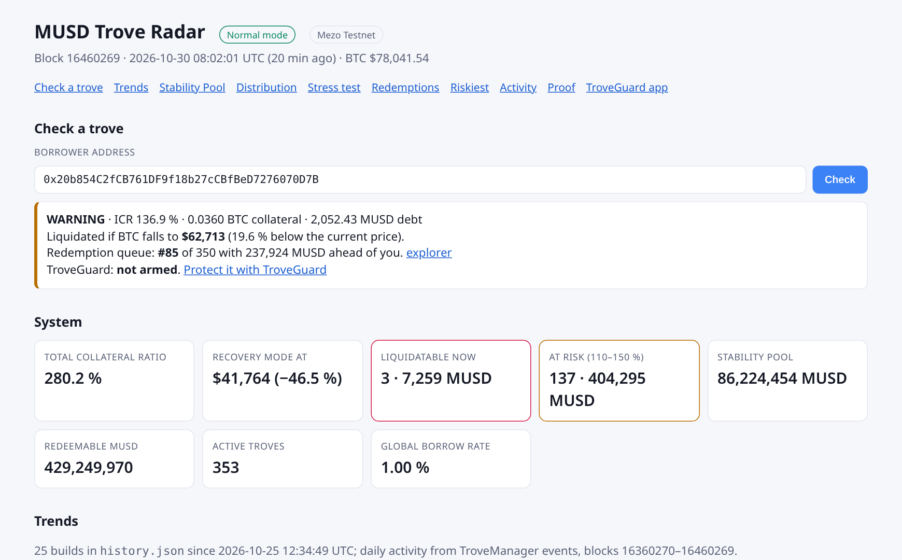
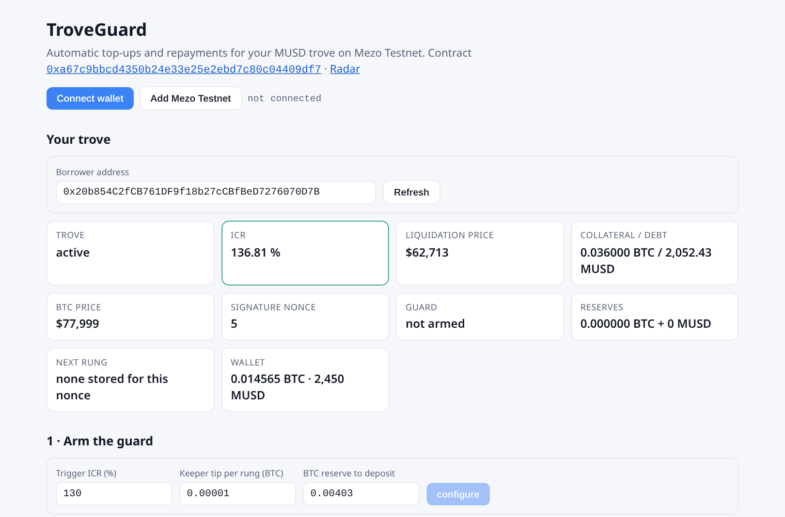

An open-source radar, alert bot, keeper daemon and on-chain trove guard, live on Mezo Testnet
github.com/northbit-dev/musd-trove-radar · northbit-dev.github.io/musd-trove-radar
Below 110 % collateral ratio the trove is closed and the BTC goes to the Stability Pool.
If the system ratio falls below 150 %, troves under 150 % can be liquidated too.
Anyone can swap MUSD for BTC. It is taken from the lowest-ratio troves first.
protect calls, simulated first and sent only when they pay.
active troves
system collateral ratio
BTC drop to Recovery Mode ($41,764)
liquidatable now, 7,259 MUSD, each checked with eth_call
troves between 110 and 150 %
liquidatable if BTC falls 20 %
Stability Pool coverage of liquidatable debt
troves a 50,000 MUSD redemption would close
Set a trigger ratio and a keeper tip. Park BTC and/or MUSD in the guard as a reserve.
One EIP-712 permit per rung, for consecutive nonces: AddColl (BTC in) or RepayMUSD (debt down).
Below the trigger, anyone calls protect(). One rung is spent, funds only enter your own trove, the caller earns the tip.
cancel refunds every reserve and invalidates every stored permit.
| Live proof, real oracle, no mocks | Ratio | Transaction |
|---|---|---|
| protect, RepayMUSD | 118.45 % → 123.95 % | 0x950ca982156cc6b3dd1f6e2e69552e00aa19bba9b70765545b3764947d335aa9 |
| protect, AddColl | 123.88 % → 131.16 % | 0xc3b2dcde9ad22ebd2d24c4aabf87d45b5e72759cc4a615565f53c65cdde6e554 |
| protect of a permit signed in guard.html | 131.23 % → 137.62 % | 0x084a2b4b964c04c722a4d10d32a04d9b8c838d0d9bd4253f7e7edbd47b052212 |
Contract 0xa67c9bbcd4350b24e33e25e2ebd7c80c04409df7, verified · 14 fork tests, 3 fuzz tests, 3 invariants · Slither reviewed · SECURITY.md

storePermits tx.keeper --loop --min-profit 5 --send: eth_call before every send, backoff, JSON logs, Docker image.Early warning, their place in the redemption queue, and a guard that acts for them.
An open-source, profit-aware daemon. Liquidations and guard tips are its income.
Coverage, pool size and expected BTC gains, plus a live per-depositor lookup.
More keepers and better-protected troves make MUSD sturdier as BTC-backed money.
Ask: feedback from the Mezo team on the guard design, and a path to mainnet addresses.
github.com/northbit-dev/musd-trove-radar · northbit-dev.github.io/musd-trove-radar · built by northbit with an AI coding assistant